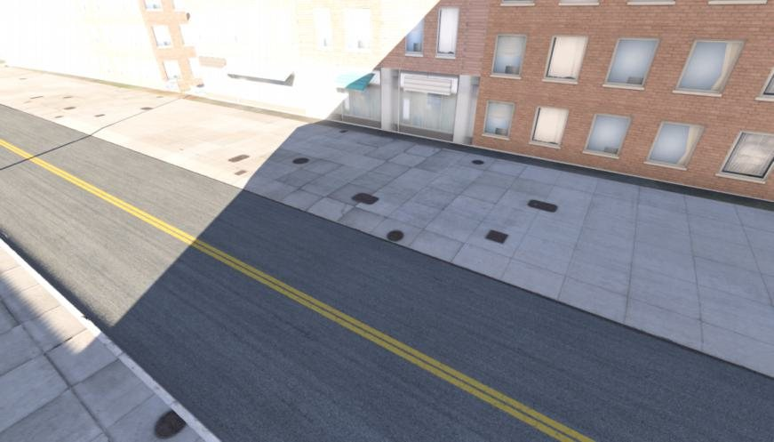
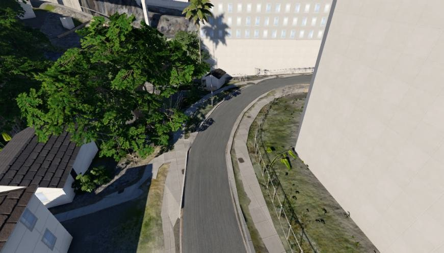
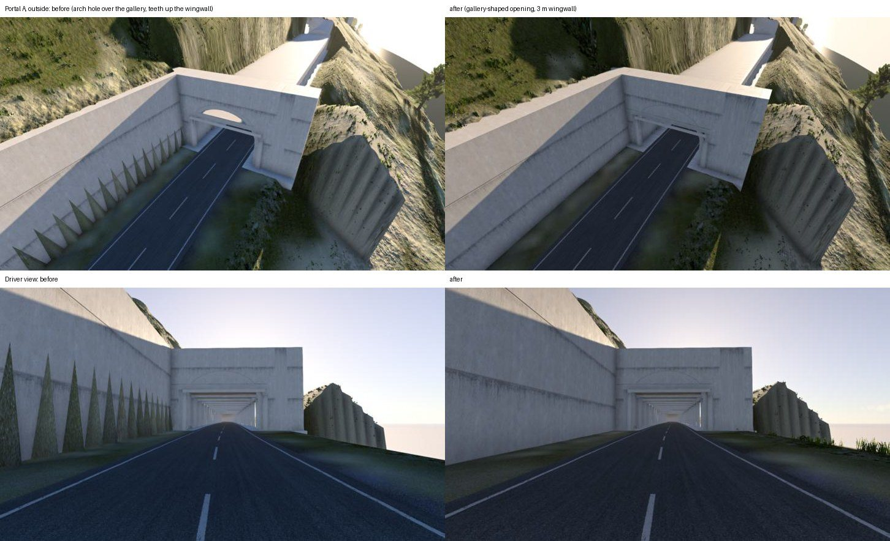
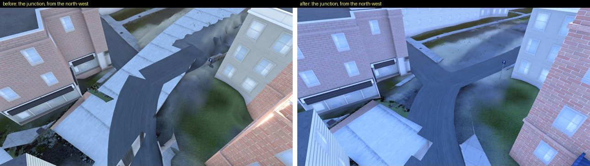
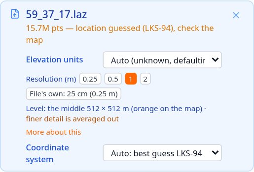
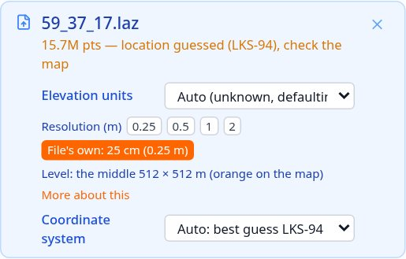
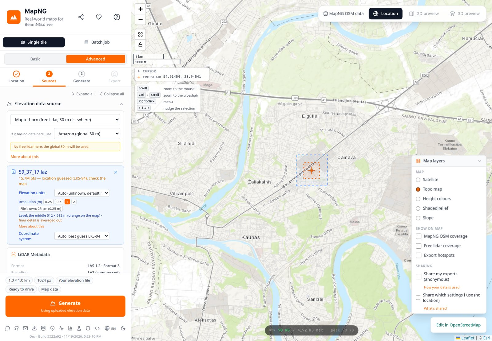
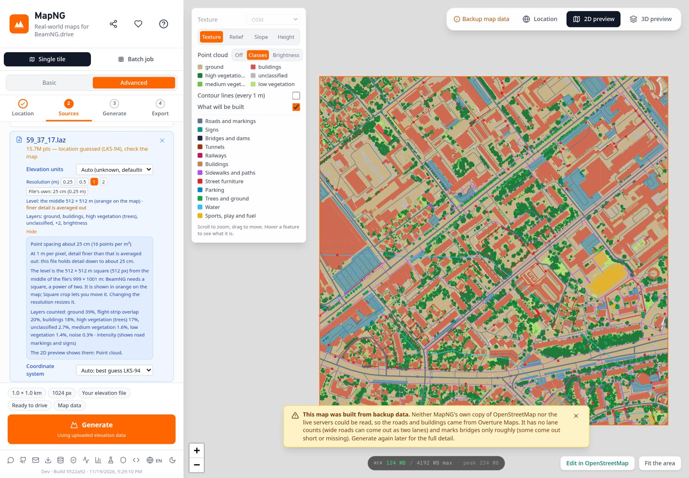
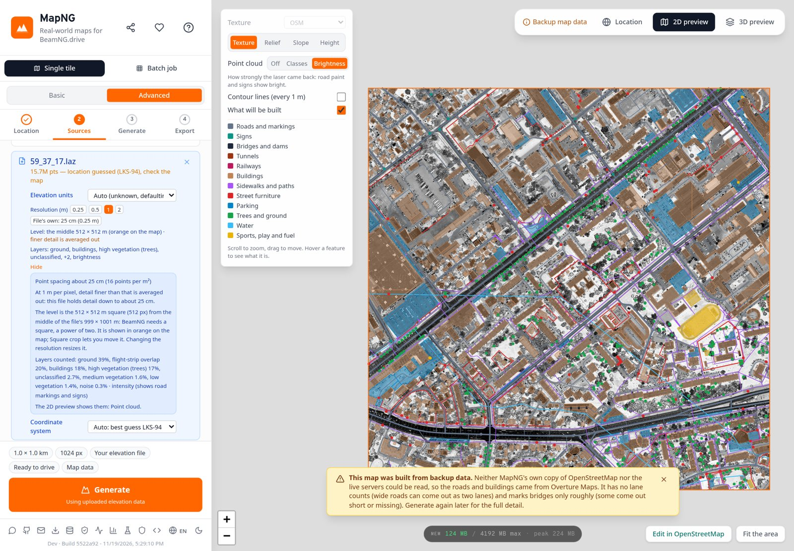

MapNG
MapNGFaster exports that need less memory
Most of the work in this version went into making every step of Generate and export quicker, without changing what comes out. Each change was checked against the level it replaced, and the levels match.
- The ground under roads and the sidewalks are worked out on several threads at once.
- Bridges, bridge towers, sidewalks beside decks and barrier gates no longer scan parts that cannot count, so big cities with hundreds of decks are far quicker.
- The export's three downloads (the surroundings, bridge heights and the water round the map) run at the same time, each still at its server's own pace.
- Generate asks which trees grow in the area as soon as it knows the map's bounds, beside the map data.
- Each building tile goes into the level's zip as soon as it is built, so the whole set is never held in memory at once.
- DesktopExports use at most 8 worker threads. More of them only used more memory (32 threads: 24 GB, 8 threads: 17 GB, the same time).
- DesktopThe data step no longer runs a second time at export. Its result used to be lost on the way back to the app, about 30 seconds of work for a city.
How heavy is this level?
DesktopBefore you export, the app now says how much memory the export will need at its peak, against what your computer has: fits, tight or too much. The figures come from measuring the desktop app on mountains, towns and downtowns from 2 to 16 km.
A progress bar that keeps time
After all the speed work, the progress bar's idea of how long each step takes was wrong by several times: it jumped through some steps and crawled through others. It has been refitted to 281 timed exports, and now spreads the rest of the bar over the time left at your run's own pace.
Sidewalks, rebuilt
Sidewalks used to be built piece by piece along each street, with corners and walkways joined on afterwards. They are now one paved area worked out for the whole map at once: the street-side sidewalks, the corners, mapped footways and the strip between them, on a fine 25 cm grid. From it come the slabs, the curbs and the ground under them.


- Curbs run unbroken, round each corner, and drop to a low lip where a driveway crosses to the road.
- Curbs come down at crosswalks, where walkways meet the street and at car park entrances.
- No paving over rivers, lakes or the sea, and none down the steep bank of a raised road.
- The ground is graded round the paving in one pass, and it never rises into a bridge deck or tunnel overhead.
- Fewer triangles for the same streets (New York 4 km: 2.12 to 1.95 million; Pittsburgh: 2.53 to 1.76 million) and quicker to build.
Tunnels, galleries and portals that match the real ones
Fizz_Mechanic sent a long, careful list from his 16 km map of Tignes and Val d'Isère, with screenshots. Most of this section comes from it, checked point by point against street-level photos.
Galleries
A road tunnel that opens along a cliff, and an avalanche gallery mapped in OpenStreetMap (tunnel=avalanche_protector), are now built the way they stand: a flat roof on the uphill wall and columns on the valley side, at the height the lidar shows, with a floor slab and a valley wall going down into the ground. A portal whose first metres are a gallery takes the gallery's rectangle as its opening, not a round arch.

Portals and the ground round them
- The ground behind a headwall is made up to its top and then falls away, instead of a square block standing as high as the wall.
- Shallow box tunnels under a town have flat headwalls that follow the ground, not 8 m walls standing over it.
- Wing walls beside a raised road start at the road's edge, with no gap between road and wall, and are left out where they would block a junction.
- Where a short underpass runs under a street that the ground data has removed, the box fits under the street and the street stays on the ground.
- A long box tunnel under a street now lays its road at a steady depth under the street, so the street over it stays level (Val d'Isère's Tunnel des Téléphériques: a 15 % climb onto the roof is gone).

Funiculars and railway tunnels
A railway tunnel now climbs at its own kind's grade: a funicular up to 100 %, trams 9 %, light rail 8 %. The Funival in Val d'Isère, whose ends are 768 m apart in height, is built as a tunnel instead of left on the surface.
A finer grid for steep maps
Terrain holes round tunnels and galleries follow the game's terrain squares. On a steep map of 2 km or less with tunnels, MapNG now suggests a 0.5 m processing resolution: tested on Zion, the jagged ground left round the structures went from 101 to 59 m².
Bridges and footbridges
- Footbridges span from end to end instead of following the ground under them (one over a river used to lie on the riverbed).
- Every footbridge gets a railing on both sides; a suspension or cable-stayed footbridge stands on no posts; their ends meet the paths they join.
- A sidewalk mapped beside a road bridge is carried on the bridge, the deck widened to it.
- A bridge over water stays within what its road can reach from its ends at its class's grade (from a tester's St. Augustine level, checked against the map and photos).
- Quay walls only stand where the survey shows a steep face.
Point cloud uploads that know where they are
You can upload a LAS or LAZ point cloud as your elevation. This version makes that much easier.
- Placed by a best guess. A file that names no coordinate system is placed from its numbers: the national grid whose area they fall in (Lithuania, Latvia, Estonia, Poland, the Netherlands, Britain, Switzerland, France, Belgium, Austria), or a UTM zone. You can pick another from the list.
- What the level keeps, on the map. The square the export takes from the middle of your upload is drawn inside the file's outline.
- The file's own resolution, in one click. The card shows the point spacing (say 25 cm) and offers it as the processing resolution, with the level's size and a warning that finer levels are heavier in BeamNG.
- Its layers. The card lists what the file holds: ground, buildings, trees and other classes, laser brightness, colour.
- In the 2D preview. Switch the preview to the point cloud's classes or its brightness, seen from above.
- Smoother terrain. Gaps under buildings, cars and trees are filled smoothly now, without the rough blocks and seams some files showed.





Bug reports with the map inside
Every exported level now carries the map data it was built from, its size and position, in a mapng_source folder, so a problem you send in can be rebuilt on exactly your data. The export report comes in two forms: export_report.md to read, and export_report.json with every check as data, without keys or tokens.
DesktopSend report in the levels list now attaches that JSON report, with home folders and keys taken out, and shows its size before you send.
Fixes
- Cancel in the save dialog stops the export. Before, the export ran on and offered the level as a download anyway.
- DesktopAn export no longer stops when a download it no longer needs fails (seen when the USGS servers dropped connections).
- Lake beds work on very large maps: Chicago at 8 km stopped carving Lake Michigan with a "Map maximum size exceeded" error.
- A lake running off the map is no longer dug far too deep: Lake Michigan off Chicago came out 142 m deep, now 12 m.
- A tunnel's approach no longer steps up or down at its portal where the road on each side was read from the other end.
- When Generate cannot get the memory for its picture, it says the computer ran out of memory.
- Model photos are asked for only on the test site; the public site and the desktop app make no such request.